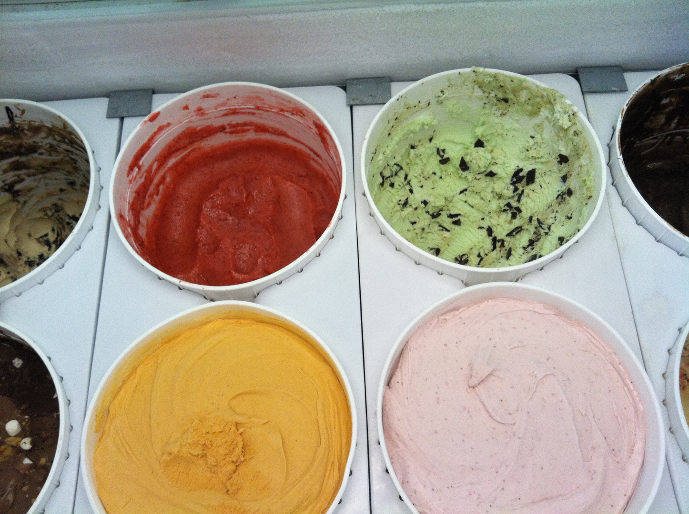
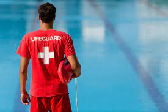
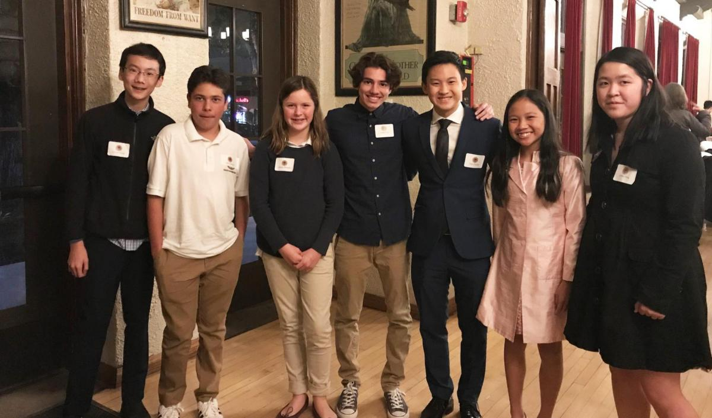
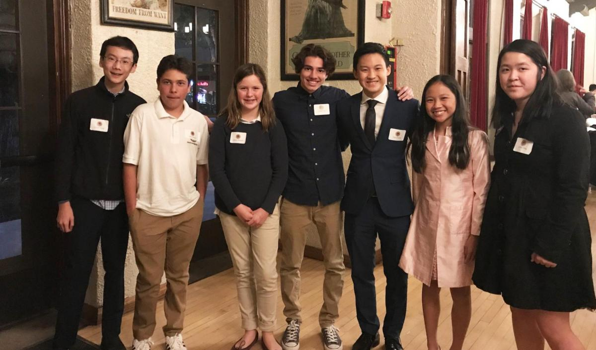
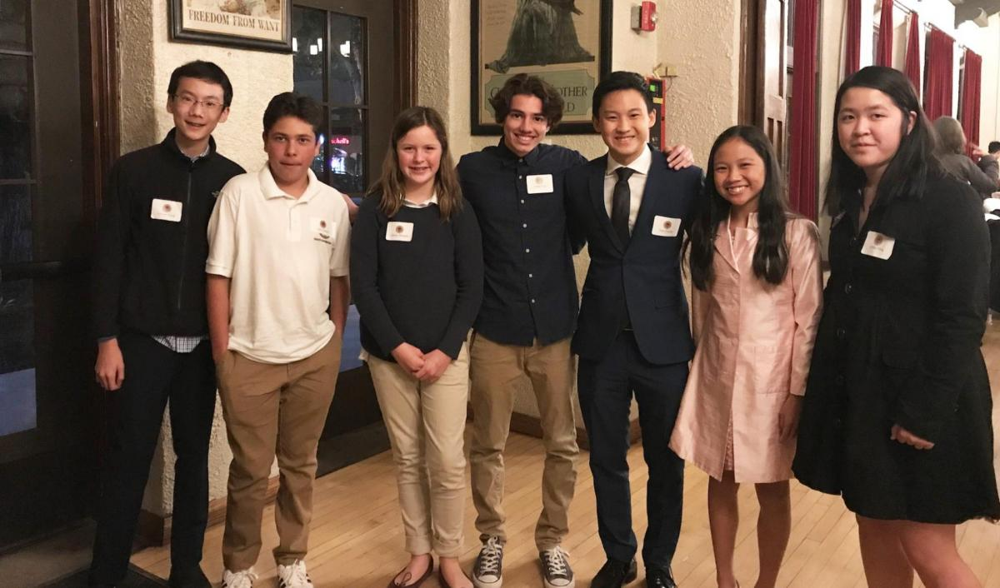

Ismael Khan
Hello, my name is Ismael Khan and I am first year pre business major at UC Riverside. I currently interested in pursuing a career in management consulting but have yet to choose a concentration.
I consider myself to be a team player, critical thinker and quite organized. I have a lot of experience working a longside a diverse group of individuals in which we all contribute to reach a common goal. I have extensive
leadership experience ranging from litigation and negotiation, to executive positions of teams, clubs and organizations. I am currently enrolled in 17 units. Some relevant courses I have taken are Business Calculus, Business 10
Intro to Computer Science and Spanish. I am a highly motivated individual who strives to perfrom at my fullest potential.
My experience on the ACLU Advocacy program has allowed me to understand the different perspectives of various communities in society today. Additionally, my time of the JTB Summer Leageu institute taught me negotiation and litigation
skills taught by sitting judges and attorneys. These skills that I have learned can be translated to the business environment when working on a team alongside different indivuals. It is important, as a leader, to understand
ones peers and organization.
Currently, I am in a professional development program for the Highlander Business Society. I am undergoing internship assignments and group projects all while enhancing my resume and cover letter. Additionally, I am becoming Microsoft
Office proficient. In my attempts to secure an internship this summer, I am working long term to become a management consultant in the future.
Experience
Team Member
• Strong intrapersonal communication, participated in staff meetings
• Communication skills with the public
• Financial Experience: managed register & counted money
Lifeguard
• Responsible for checking out customers
• Managed multiple responsibilities: ensured safety, enforced rules, performed pH tests
Vice Chair
• Interacted with the public (children, young adults, elderly)
• Plan/coordinate city wide events (Snow Day, Senior Tech Days, Breakfast with Santa)
• Serve on committees with fellow commissioners
Education
UC Riverside
Portfolio


 

